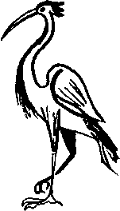

Suat Ferid gözlerini açtığı zaman kendini bir hastane yatağında salam gibi bağlanmış buldu. İlk tepkisi “ah söyledik de o kadar o dalbudağa” diye muhayyel tahayyülcûsüne küfretmek oldu. Direnecek, bağırıp çağıracak, yaşadıklarının gerçek olduğunu haykıracak, Şeyh Osman Hulûsi Beyefendi Ağa’dan bahsedecek, Keşfülfûnûn’un sayfa numarasını verecek, daha da ayak direyenlere Duvduvani Kubad Efendi’nin kayıp kitabını bulduğunu, bu kitabın çağların bilgisini taşıdığını, asırların aynası olduğunu, evinde masada durduğunu, bir izin verseler dediklerini nasıl ispat edeceğini söyleyecek, kitap eline geçince de her türlü riski göze alarak tüm bu hastaneyi kabağa, personelini –ikisi sırtları ona, yüzleri pencereye dönük, odadaydılar– sıçana çevirecekti... Onda bu güç vardı... Sonra bunun iyi bir taktik olmayacağını, hiçbir Allah’ın enayisi doktorun kendisini çözmeyeceğini, hemen morfini basıp onu uyutacaklarını veya burası kötü bir tımarhaneyse, bakıcıların gelip sakinleşinceye kadar kendisini döveceklerini düşündü.
Daha yumuşak davranmalıydı. Kubad Efendi’den asla bahsetmemeliydi. Yumuşakça "ah başım" diye inledi, belki akşam içtiği viskiler bir işe yarardı, içtiğini söyler, kanındaki alkolü ölçtürür, insanlık hali ayağına çıkardı. İki beyaz gömlekli birden ona doğru döndüler. “Doktor Anette” modeli!
“Ah piç oğlu piç, onu uyguluyor” diye yarı içinden yarı aleni küfretti. Anette yaklaştı:
“Nasılsınız Suat Bey” dedi.
“İyiyim Doktor A... şey Hanım” diyerek toparladı, ya adı Anette değilse? Al başına belayı.
“Bana bak serseri... hem adımı unutmuş numarası yapacak hem doktor hanım diye dalga geçecek kadar halin var demek ki...” dedi “Doktor Anette.”
Diğer beyaz gömlekli de gülüyordu. Ellerini uzatarak şeritleri çözmeye başladı. “Doktor Anette”,
“Ben sizin yerinizde olsam o kadar acele etmezdim... Ayıldın mı maskara?” dedi. Diğer doktor da benzer bir tavır takındı:
“Aşkolsun Suat Ferid Bey, kaleminizi tutan o kolda ne güç varmış öyle?”
Suat Ferid sabırla çözülmeyi beklerken “daha ne güç var o kolda, şimdi o geveze çeneni eline verince göreceksin” diye düşündü. İşlerin bu kadar kolay gideceğine inanmıyordu ama işte ayakları da çözülüyor, andavallılar kendisini serbest bırakıyordu. Geveze doktor devam etti:
“Romanınızı katıla katıla okudum... Bizim müstahdemleri dalga olsun diye bakkala gönderip gönderip sizin yoğurtlardan aldırıyoruz sonra da onlara hediye ediyoruz, güya çaktırmadan evlerine götürürlerken de yerlere yatıyoruz. Bir arkadaş var acayip taklit yapar, o sahneyi bizim Abuzer Efendi’nin sesinden ‘Iîineet ula garu, eccük de şorya sür len’ diye seslendiriyor... Hih... hih...”
Bu gevezelik, belki romanının böyle okunuşu, Sual Ferid’i doktora saldırıp vurmaktan vazgeçirdi. Şimdilik pek bir neden yok gibi duruyordu. Yine de risk almayarak ismini vermeden Anette’e sordu.
“Bana ne oldu?”
Diğer doktor üzerine alınarak cevap verdi, belki de Suat Ferid ile laklak etmek, ileride başka bir romanında oynamak istiyordu. Genç, saz benizli biriydi:
“Dün ilham perisini yakalamak için çok uğraşmışsınız Suat Ferid Bey, iki şişe viski, bir şişe Napoleon içmişsiniz, ama siz onu yakalayacağınıza o sizi yakaladı işte.”
Suat Ferid yavaş yavaş anlıyordu ama yine soran bakışlarla baktı...
“Anette Hanım sizi buraya getirdi, midenizi yıkadık, şimdi gayet iyisiniz.”
Derin bir nefes aldı. Anette, Anette’ti. Suat Ferid’in ayakkabıları ve elbiseleri yoktu. Yeşil hastane kıyafetleri içindeydi. Beyaz hastane giysilerini çıkaran Anette,
“Biz çıkalım da sen giyin” diyerek eliyle refakatçi yatağının üzerindeki elbiseleri gösterdi. Suat Ferid giyinirken hiçbir şey düşünmedi. Odanın banyosuna girdi, iyi hastanelerden biri olmalıydı burası. Yüzünü yıkadı. Bir iki dakika sonra dışarı çıktı. Anette elinden tuttu. Dört kat kadar merdivenlerden indiler.
“Niçin asansörle inmedik?"
“Çünkü monsieur, asansörün önünde bir sürü gazeteci var. Zaten olan oldu, şimdi bodrum katından çıkıyoruz.”
Taksi hazırdı. Olaysız kısa bir yolculuktan sonra eve geldiler. Yolda hiç konuşmadılar; yalnız Anette başını Suat Ferid’in omzuna dayamıştı, eve kadar da öyle gittiler.
Suat Ferid, Anette’in kendi kapısını açmasını şaşkınlıkla izledi. İçeri girdiler.
“Yoksa tahayyül eden sen misin?" diye sordu.
“Hayır aptal!"
“Peki bana ne oldu acaba, lûtf ve inayet buyrulup anlatılacak mı?”
Anette’in gözleri parladı.
“Hımm... büyük bir zevkle! Siz sabahlara kadar âlem yaptınız... Sonra kapımı çaldınız... Daha hızlı... daha güçlü çaldınız... Uyandım... Siz olduğunuzu görünce açtım... Üzerime saldırıp dudaklarımdan öpmeye kalktınız... Bir yandan da bana neler neler yapacağınızdan, koskoca Asya'nın gün olup ufak tefek Avrupa’ya girmesinin mukadder olduğundan, buna şimdiden alışmak, alıştırmalar yapmak gereğinden söz ettiniz. Pek şekerdiniz monsieur!..."
Suat Ferid renkten renge girerek dinliyordu.
“Yoksa?”
“Ne yoksası, yoksası yok... Kendinizde lüzumsuz güçler vehmetmeyin lütfen, fermuarınızın yeri neresidir bilecek haliniz mi vardı sizin?”
“Sonra?”
“A tabii, sonrası var: Uzun uzun bana Benalgezira gezegenindeki maceralarınızı anlattınız... ‘Erü... Erü... haaark’ sesleri çıkardınız. Boyuna ‘şahıs beni biliyor mu, şahıs’ dediniz. Bunu söyleyenle başka birtakım romanlardaki karakterler arasında son derece akıllıca bağlantılar kurdunuz... Sizi ve beni yazan bir uydurukçuyla yaptığınız pazarlıkları anlattınız! Siz de ona birtakım sözler vermişsiniz...”
Tamamen ikna olması için bir iki ayrıntı daha kalmıştı, yerin dibine geçmesine de ramak!
“Peki hastaneye nasıl gittik? Bu evin anahtarları sende ne arıyor?”
“Her şeyi bilmek istiyorsun değil mi? Sen daha sonra, son dört buçuk yıldır benimle neler yapmayı planladığını anlattın, etkilenmedim desem yalan olur o ne mutantan bir hayal gücü..."
“Lütfen Anette..."
“Niye? Benim aklım çoğuna yattı. Bazılarını ise gözümün önünde şekillendiremedim bile.”
“Anette lütfen..."
“Peki, sen daha sonra kendi ayağına takılarak güm diye halının üstüne düştün... Çok korktum... Yaşar ile Satılmış’ı uyandırdım, Yaşar Hanım seni asansöre kadar sürükledi. Ben de senin evin kapısının ardına kadar açık olduğunu gördüm. Anahtarını, üstüme de senin bir paltonu aldım, hastaneye geldik, daha anlatayım mı? Müstahdemleri ve doktorları görünce çıldırdın, ‘alçak muhayyil... beni sattın... hayvan...’ diyerek adamlara saldırdın. Bir ikisini devirdin. Sonra Yaşar Hanım seni yere yıktı da herifler rahat etti.”
“Anette lütfen..."
“İstemiyorsan anlatmam...”
“Yoo hayır... Ama alay etme lütfen... Başka ne oldu?”
“Şiir okudunuz, ağladınız."
Suat Ferid ayağa kalktı, skandalın dikâlâsı ve kaymaklı daniskası olmuştu.
“Her şey ve her şey için çok özür dilerim Anette... Ben... ne söyleyeceğimi bilemiyorum."
Kız somurttu.
“Her şey için mi özür diliyorsunuz?"
“Evet tabii, hatta buradan taşınacağıma bile söz veriyorum."
“Canım saçmalamayın, siz ev sahibisiniz, kirada oturan benim.”
“Anette... Siz niçin ağlıyorsunuz?"
“Beni sevdiğinizi ancak ölecek kadar sarhoşken söylüyor, ayılınca da özür diliyorsunuz...”
“Sizi seviyorum mu dedim?”
“Bilmek istiyorsanız evet, in de olsam cin de olsam, netâyic-ül tahayyülattan da olsam, hayalet, hortlak, peri ne olursam olayım sevdiğinizi söylediniz ama ayılınca özür dilemek de, hatırlamamak da hakkınız...”
Yerinden mi suyundan mı, elin Belçikalısı bunları derken en hasından bir Mavikavak numarası çekmişti.
“Bunları söyledim mi ben Anette?”
Şimdi kızın niye her zamankinden de sokulgan olduğunu anlıyordu...
“Ağzıma sağlık, çok iyi, çok doğru fakat sarhoş kafayla eksik, pek eksik söylemişim eşek ben” diyerek kuş bedenli kızı havalara kaldırdı.
Anette debeleniyor, pek de kurtulmak istemiyordu. O aniden pek erken bastıran kahvemsi gece, kız, Suat Ferid’de kaldı.